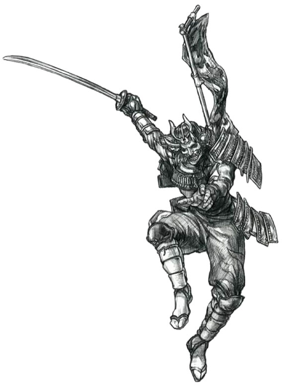

The Manuscripts
Twelve scrolls. An unidentified script. A discovery that should not exist.
VIEW RECORD →ARCHIVE // RECORD 049
Some things should not be forgotten.
ENTER THE ARCHIVE →RECENTLY ADDED
Twelve scrolls. An unidentified script. A discovery that should not exist.
VIEW RECORD →
Origin unknown. Classification remains under review.
OPEN FILE →Not everything broadcasts by choice.
ACCESS LOG →RESEARCH // RECORD // QUESTION // PRESERVE
“Between what is known and what is possible lies The Pantheon Zaibatsu.”
HISTORY // YONAGUNI
During an excavation of an abandoned shrine, a cavity was reportedly discovered thirty-three feet below the northeast corner of the foundation.
The object recovered from it became the beginning of a record that has never settled into a single explanation.